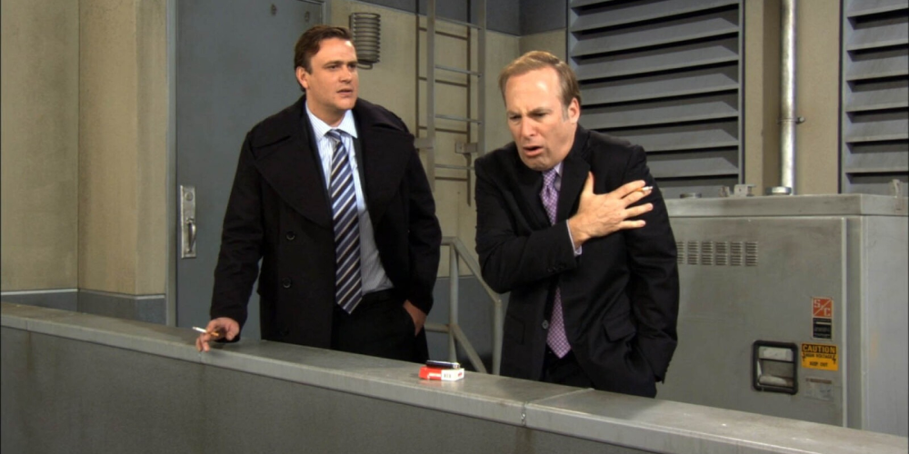

Arthur Hobbs, portrayed by Bob Odenkirk, is a recurring character in How I Met Your Mother, known for being Marshall Eriksen’s abrasive and demanding boss at Goliath National Bank. Nicknamed "Artillery Arthur," Hobbs is notorious for his aggressive demeanor, often shouting and intimidating his employees. Despite his tough exterior, Arthur has moments where his softer side shines through, especially in his relationship with his dog, Tugboat, whom he adores.
Arthur's interactions with Marshall are a central aspect of his character. While he constantly puts pressure on Marshall and the legal team, there are occasional moments where he shows some appreciation for Marshall’s work. However, most of the time, Arthur’s loud and brash personality creates comical tension, as Marshall tries to navigate his boss’s mood swings.
One of the standout moments for Arthur is when he becomes deeply emotional over his dog's health, showing that underneath his tough exterior, there is a sentimental side to him. Bob Odenkirk's portrayal of Arthur Hobbs brings humor and intensity to the character, making him both intimidating and hilarious.
Arthur Hobbs remains a memorable part of the *How I Met Your Mother* universe, serving as one of the more challenging bosses Marshall has to deal with, while also providing some of the show's most outrageous and funny moments.